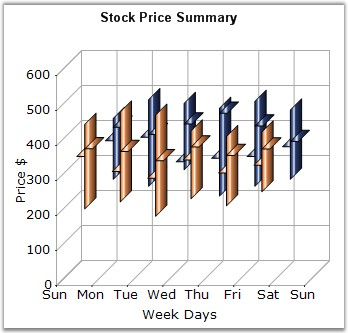

Hi Lo Open Close Chart is a special kind of chart that is normally used in stock analysis. This chart type expects four y values for every point in the series. Those values should represent the High, Low, Open and Close values of the stock, in that order, for that period.

Figure 72: Chart displaying Hi Lo Open Close Series
Chart Details
|
Details | |
|
Number of Y values per point |
4. |
|
Number of Series |
One or More. |
|
Cannot be Combined with |
Pie, Bar, Stacked Bar charts, Polar, Radar |
Hi Lo Open Close series can be added to the chart using the following code.
|
[C#]
// Create chart series and add data point into it. ChartSeries series = this.ChartWebControl1.Model.NewSeries("Series Name",ChartSeriesType.HiLoOpenClose); // Arguments: X value, High, Low, Open, Close series.Points.Add(0, 5, 1, 3, 4); series.Points.Add(1, 8, 7, 4, 7); series.Points.Add(2, 8, 4, 5, 6);
// Add the series to the chart series collection. this.ChartWebControl1.Series.Add(series); |
|
[VB.NET]
' Create chart series and add data point into it. Dim series As ChartSeries = Me.ChartWebControl1.Model.NewSeries("Series Name", ChartSeriesType.HiLoOpenClose) ' Arguments: X value, High, Low, Open, Close series.Points.Add(0, 5, 1, 3, 4) series.Points.Add(1, 8, 7, 4, 7) series.Points.Add(2, 8, 4, 5, 6)
' Add the series to the chart series collection. Me.ChartWebControl1.Series.Add(series) |